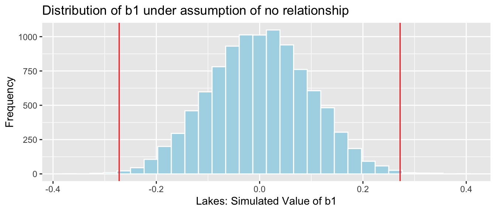

Chapter 5 Normal Error Regression Model
Learning Outcomes:
Explain when it is appropriate to use “theory-based” standard error formulas.
Interpret estimates, standard errors, test statistics, and p-values resulting from linear model output in R.
List the assumptions made in the normal error regression model.
Calculate p-values corresponding to t-statistics and F-statistics in R.
Interpret confidence intervals for an expected response, and prediction intervals, and distinguish between these two types of intervals.
Assess the whether linear model assumptions are reasonably satisfied, using residual plots, histograms, and normal QQ plots.
Explain when we should or should not expect p-values and confidence intervals obtained via “theory-based” approaches to agree with those obtained via simulation.
Identify situations where a log transformation of the response variable is appropriate.
Calculate predicted values for models involving a log transformation of the response variable.
Interpret regression coefficients in models involving a log transformation of the response variable.
Explain the regression effect.
5.1 The Normal Error Regression Model
5.1.1 Example: Ice Cream Dispensor

Suppose an ice cream machine is manufactured to dispense 2 oz. of ice cream per second, on average. If each person using the machine got exactly 2 oz. per second, the relationship between time and amount dispensed would look like this:

In reality, however, the actual amount dispensed each time it is used will vary due to unknown factors like:
- force applied to dispensor
- temperature
- build-up of ice cream
- other unknown factors
Thus, the data will actually look like this:

5.1.2 Signal and Noise
We assume that there are two components that contribute to our response variable \(Y_i\). These are:
A function that relates the expected (or average) value of \(Y\) to explanatory variables \(X_1, X_2, \ldots{X_p}\). That is, \(E(Y_i)= f(X_{i1}, X_{i2}, \ldots, X_{ip})\). This function is often assumed to be linear, that is \(E(Y_i)= \beta_0 + \beta_1X_{i1} + \beta_2X_{i2}+ \ldots+ \beta_pX_{ip}\)
Random, unexplained, variability that results in an individual response \(Y_i\) differing from \(E(Y_i)\).
The first component is often referred to as signal. The second is referred to as noise.
5.1.3 Normal Distribution
In a linear regression model, we assume individual response values \(Y_i\) deviate from their expectation, according to a normal distribution.
A normal distribution is defined by two parameters:
- \(\mu\) representing the center of the distribution
- \(\sigma\) representing the standard deviation
This distribution is denoted \(\mathcal{N}(\mu, \sigma)\).

We can think of the curve as representing the area where the random noise value lies. When the standard deviation is small, noise tends to be close to 0, meaning the observed values will be close to their expectation. For example, if we randomly pick a point under the blue curve, the x-value, representing size of the noise is virtually never beyond \(\pm 1.5\). On the other hand, the green curve, which has higher standard deviation, would often produce noise values as extreme as \(\pm 2\).
Note that for standard deviation \(\sigma\), \(\sigma^2\) is called the variance. Some books denote the normal distribution as \(\mathcal{N}(\mu, \sigma^2)\), instead of \(\mathcal{N}(\mu,\sigma)\).
5.1.4 Signal and Noise in Icecream Example
In this example, we’ll simulate the amount of ice cream dispensed by adding a random number from a normal distribution with mean 0 and standard deviation 0.5 to the expected amount dispensed, which is given by \(2x\), where \(x\) represents time pressing the dispenser.
Thus, amount dispensed for person \(i\) is given by
\[Y_i = 2x_i+\epsilon_i, \text{ where } \epsilon_i\sim\mathcal{N}(0, 0.5) \]
The amount dispensed for a sample of 15 people is shown below.
set.seed(10082020)
# set times
time <- c(1, 1.2, 1.5, 1.8, 2.1, 2.1, 2.3, 2.5, 2.6, 2.8, 2.9, 2.9, 3.1, 3.2, 3.6)
expected <- 2*time # expected amount
noise <-rnorm(15, 0, 0.5) %>% round(2) #generate noise from normal distribution
amount <- 2*time + noise # calculate observed amounts
Icecream <- data.frame(time, signal, noise, amount) # set up data table
kable((Icecream)) #display table| time | signal | noise | amount |
|---|---|---|---|
| 1.0 | 2.0 | 0.23 | 2.23 |
| 1.2 | 2.4 | -0.49 | 1.91 |
| 1.5 | 3.0 | 0.58 | 3.58 |
| 1.8 | 3.6 | -0.03 | 3.57 |
| 2.1 | 4.2 | 0.17 | 4.37 |
| 2.1 | 4.2 | -0.93 | 3.27 |
| 2.3 | 4.6 | 0.05 | 4.65 |
| 2.5 | 5.0 | -0.37 | 4.63 |
| 2.6 | 5.2 | -0.46 | 4.74 |
| 2.8 | 5.6 | 0.17 | 5.77 |
| 2.9 | 5.8 | -0.59 | 5.21 |
| 2.9 | 5.8 | 0.12 | 5.92 |
| 3.1 | 6.2 | 0.00 | 6.20 |
| 3.2 | 6.4 | 0.67 | 7.07 |
| 3.6 | 7.2 | 0.05 | 7.25 |
The scatterplot displays the amount dispensed, compared to the time pressing the dispenser. The red line indicates the line \(y=2x\). If there was no random noise, then each person’s amount dispensed would lie exactly on this line. The blue line represents the location of the least squares regression line fit to the amounts observed.
ggplot(data=Icecream1, aes(x=time, y=amount)) + geom_point() + ggtitle("Icecream Dispensed") + xlab("Time Pressing Dispensor") + ylab("Amount Dispensed") + stat_smooth(method="lm", se=FALSE) + geom_abline(slope=2, intercept=0, color="red") +
annotate("text", label="y=2x", x= 3.5, y=6.5, size=10, color="red")In a real situation, we would not see the signal and noise columns or the red line that represents the “true”, relationship. We would only see the time and amount, and the blue line that is estimated based on them.
We use the blue line, estimated from our observed data, to estimate the location of the red line, which represents the underlying true signal, which we do not know.
The equation of the red line is given by:
\(Y_i = \beta_0 + \beta_1X_{i} + \epsilon_i\), where \(\epsilon_i\sim\mathcal{N}(0,\sigma)\),
where \(Y_i\) represents amount dispensed, and \(X_i\) represents time. \(\beta_0, \beta_1,\), and \(\sigma\) are the unknown model parameters associated with the ice cream machine’s process.
We estimate \(\beta_0\) and \(\beta_1\), using our regression line estimates \(b_0\) and \(b_1\), shown below.
IC_Model <- lm(data=Icecream1, lm(amount~time))
IC_Model##
## Call:
## lm(formula = lm(amount ~ time), data = Icecream1)
##
## Coefficients:
## (Intercept) time
## -0.1299 2.0312The estimated regression equation is
\[Y_i = b_0 + b_1X_i + \epsilon_i = -0.1299087 + 2.0312489X_i + \epsilon_i \]
where \(\epsilon_i\sim\mathcal{N}(0,\sigma)\).
An estimate for \(\sigma\) is given by
\(s = \sqrt{\frac{\displaystyle\sum_{i=1}^n(y_i-\hat{y}_i)^2}{(n-(p+1))}}\).
Estimate of \(\hat{\sigma}\):
s <- sqrt(sum(IC_Model$residuals^2)/(15-2))
s## [1] 0.4527185The estimates of \(b_0 = -0.1299087\), \(b_1=2.0312489\), and \(s = 0.4527185\) are resonably close estimates to the values \(\beta_0=0, \beta_1=2\), and \(\sigma = 0.5\), that we used to generate the data.
In a real situation, we’ll have only statistics \(b_0\), \(b_1\), and \(s\), and we’ll need to use them to draw conclusions about parameters \(\beta_0=0, \beta_1=2\), and \(\sigma = 0.5\).
5.1.5 General Mathematical Form
In the ice cream example, the relationship between time and amount was given by a linear equation. We can generalize this to situations with multiple explanatory variable.
The mathematical form of a normal error linear regression model is
\(Y_i = \beta_0 + \beta_1X_{i1}+ \ldots + \beta_pX_{ip} + \epsilon_i\), with \(\epsilon_i\sim\mathcal{N}(0,\sigma)\).
Note that in place of \(X_{ip}\), we could have indicators for categories, or functions of \(X_{ip}\), such as \(X_{ip}^2\), \(\text{log}(X_{ip})\), or \(\text{sin}(X_{ip})\).
The quantities \(\beta_0, \beta_1, \ldots, \beta_p\) are parameters, pertaining to the true but unknown data generating mechanism.
The estimates \(b_0, b_1, \ldots, b_p\), are statistics, calculated from our observed data.
We use confidence intervals and hypothesis tests to make statements about parameters, based on information provided by statistics.
We close the section by presenting a philosophical question:
Do data really come about from processes like the normal error regression model? That is, do you think it is reasonable to believe that data we see in the real world (perhaps the amount of ice cream dispensed by an ice cream machine) is a combination of some true, but unknown equation involving the explanatory and response variables, and some unexplained noise, coming from a normal distribution?
We won’t attempt to answer that question here, but it is worth thinking about as we delve deeper into the normal error regression model. After all, it is the assumption on which much statistical inference depends.
5.2 Inference in LLSR Model
5.2.1 lm summary Output
Recall our linear model for mercury levels of lakes in Northern Florida, compared to Southern Florida.
The equation of the model is:
\[ \widehat{\text{Mercury}} = \beta_0+\beta_1\times\text{South} \]
We fit the model in R and display its summary output below.
summary(Lakes_M)##
## Call:
## lm(formula = Mercury ~ Location, data = FloridaLakes)
##
## Residuals:
## Min 1Q Median 3Q Max
## -0.65650 -0.23455 -0.08455 0.24350 0.67545
##
## Coefficients:
## Estimate Std. Error t value Pr(>|t|)
## (Intercept) 0.42455 0.05519 7.692 0.000000000441 ***
## LocationS 0.27195 0.08985 3.027 0.00387 **
## ---
## Signif. codes: 0 '***' 0.001 '**' 0.01 '*' 0.05 '.' 0.1 ' ' 1
##
## Residual standard error: 0.3171 on 51 degrees of freedom
## Multiple R-squared: 0.1523, Adjusted R-squared: 0.1357
## F-statistic: 9.162 on 1 and 51 DF, p-value: 0.003868The estimated regression equation is
\[ \widehat{\text{Mercury}} = 0.42455+0.27195\times\text{South} \]
We’ve seen how to obtain the first two columns of the summary table, labeled “Estimate” and “Std. Error”.
The last column, labeled “Pr(>|t|)” is, in fact a p-value associated with associated with the null hypothesis that the regression parameter on that line is zero. (i.e. \(\beta_j=0\)).
Columns in Linear Model summary() Output
Estimate gives the least-squares estimates \(b_0, b_1, \ldots, b_p\)
Standard Error gives estimates of the standard deviation in the sampling distribution for estimate. (i.e. how much uncertainty is there about the estimate?) These are computed using the formulas in Section 4.7.
t value is the estimate divided by its standard error.
Pr(>|t|) is a p-value for the hypothesis test of whether quantity represented \(b_j\) could plausibly be 0.
5.2.2 Example: Florida Lakes Hypothesis
Hypothesis Test for line (intercept)
Null Hypothesis: The average mercury level among all lakes in North Florida is 0 (\(\beta_0=0\)).
Alternative Hypothesis: The average mercury level among all lakes in Northern Florida is not 0 (\(\beta_0\neq 0\)).
We already know the average mercury level among all lakes in North Florida is not 0, so this is a silly test.
Hypothesis Test for line LocationS
Null Hypothesis: There is no difference in average mercury levels between Northern and Southern Florida (\(\beta_1=0\)).
Alternative Hypothesis: There is a difference in average mercury levels in Northern and Southern Florida (\(\beta_1\neq 0\)).
This test is relevant to us.
R does not obtain these p-values through simulation, but rather by using the symmetric and bell-shaped t-distribution to approximate the distribution of these statistics. This is appropriate when the sampling distribution for our test statistic is reasonably symmetric and bell-shaped.
You’ve probably noticed that the sampling distributions in our permutation-based hypothesis tests, and our bootstrap distributions for regression coefficients have been roughly symmetric and bell-shaped. When this happens, we can use a symmetric and bell-shaped distribution to model the distribution of a test statistic when the null hypothesis is true, bypassing the need to use simulation.
There is statistical theory which shows that if data really do come from the normal error regression model process, like the ice cream dispenser in the previous section, then the ratio of regression coefficients (means, differences in means, slopes) divided by their standard error, will follow a symmetric bell-shaped distribution called a t-distribution.
5.2.3 t-distribution
A t-distribution is a symmetric, bell-shaped curve, with thicker tails (hence more variability), than a \(\mathcal{N}(0,1)\) distribution.

5.2.4 t-test
For data that come from a normal error regression model, we can use a t-distribution to approximate the sampling distribution used in our hypothesis tests, when the null hypothesis is assumed to be true.
Important Fact: If \(Y_i = \beta_0 + \beta_1X_{i1}+ \ldots + \beta_pX_{ip} + \epsilon_i\), with \(\epsilon_i\sim\mathcal{N}(0,\sigma)\), then
\[ t= \frac{{b_j}}{\text{SE}(b_j)} \]
follows a t-distribution.
The \(t=\frac{{b_j}}{\text{SE}(b_j)}\) is called a t-statistic.
We’ll use this t-statistic as the test statistic in our hypothesis test.
5.2.5 t-test for N vs S Lakes
Recall the hypothesis test we performed to investigate whether there is a difference in average mercury level between lakes in Northern Florida and Southern Florida.
Null Hypothesis: There is no difference in average mercury levels between Northern and Southern Florida (\(\beta_1=0\)).
Alternative Hypothesis: There is a difference in average mercury levels in Northern and Southern Florida (\(\beta_1\neq 0\)).
Test Statistic: \(t=\frac{{b_j}}{\text{SE}(b_j)} = \frac{0.27195}{0.08985} = 3.027\)
Key Question: What is the probability of getting a t-statistic as extreme as 3.027 if \(\beta_1=0\) (i.e. there is no difference in mercury levels between northern and southern lakes).
We plot the t-statistic of 3.027 that we observed in our data and observe where it lies on a t-distribution.
ts=3.027
gf_dist("t", df=51, geom = "area", fill = ~ (abs(x)< abs(ts)), show.legend=FALSE) + geom_vline(xintercept=c(ts, -ts), color="red") + xlab("t")
2*pt(-abs(ts), df=51)## [1] 0.003866374The low p-value gives us strong evidence of a difference in average mercury levels between lakes in Northern and Southern Florida.
5.2.6 Comparison to Simulation
Let’s compare these results to those given by the permutation test and bootstrap confidence interval.
Permutation Test
NSLakes_SimulationResultsPlot
p-value:
b1 <- Lakes_M$coef[2] ## record value of b1 from actual data
mean(abs(NSLakes_SimulationResults$b1Sim) > abs(b1))## [1] 0.0039